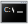
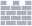

Администратор: C:\Windows\system32\cmd.exe
Microsoft Windows [Version 10.0.11583.566]
(c) Корпорация Майкрософт (Microsoft Corporation), 2020. Все права защищены.
A problem has been detected and Windows has been shut down to prevent damage to your computer.
IRQL_NOT_LESS_OR_EQUAL
*** STOP: 0x000000C1 (0x000001F, 0x0000008, 0x0000010, 0xG7H2S35)
*** dkmys1.sys - Address G74H00000, DateStamp 4 eh358936df
Beginning loss of physical memory
ATTENTION:
IMMEDIATE INTERVENTION REQUIRED, RISK OF DATA LOSS!
If this is first time you`ve seen this stop erro screen don`t try to restart your computer.
You must follow this steps:
Try connecting with Microsoft as quickly as possible, risk of data loss...
Windows Defender
PC status: At risk
- Scan completed
- Your Windows has been infected!
- The removal of viruses is required immediately ro prevent futher system damange, loss of
programs, photos, videos or other files. Personal and banking information are at risk!
-
Real-time protection:
Off
-
Viruses detected:
7

We turn off all internal computer processes to protect it from data loss. Do not close this window
or try to turn off the computer. Risk of data loss!(Error 0x0006466)
Try contact Microsoft support for further instructions by calling Microsoft Call Center(For Free)!
-
Microsoft Call Center Number: +1 (855) 621 11 23
Call required! Your computer requires help! To remove all detected viruses, you must know how you can
remove viruses without data loss. Just call to our Microsoft Support Center for help and we'll tell you
what to do next. Don`t try to fix this problem yourself.
- 
- 
3:37
16.05.2020